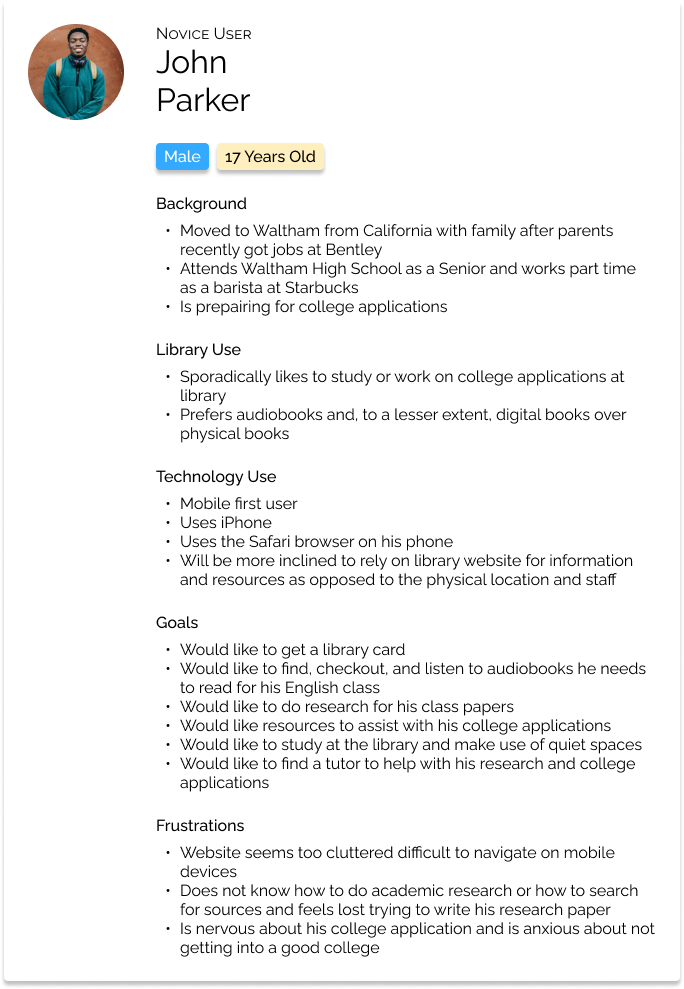
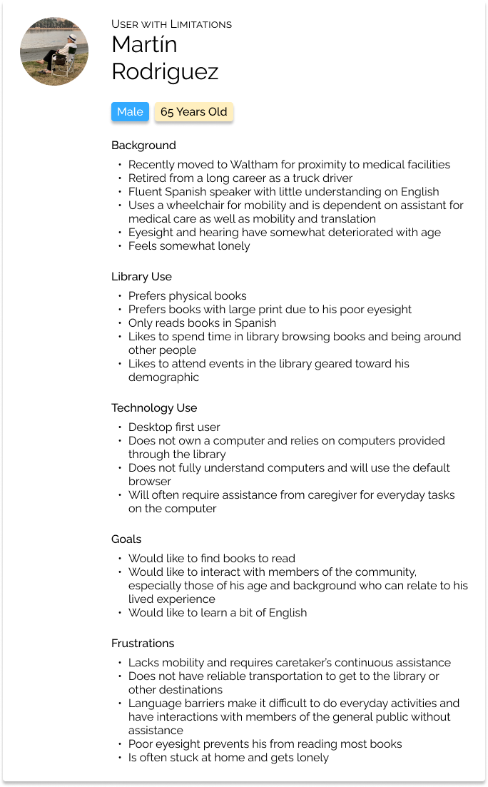
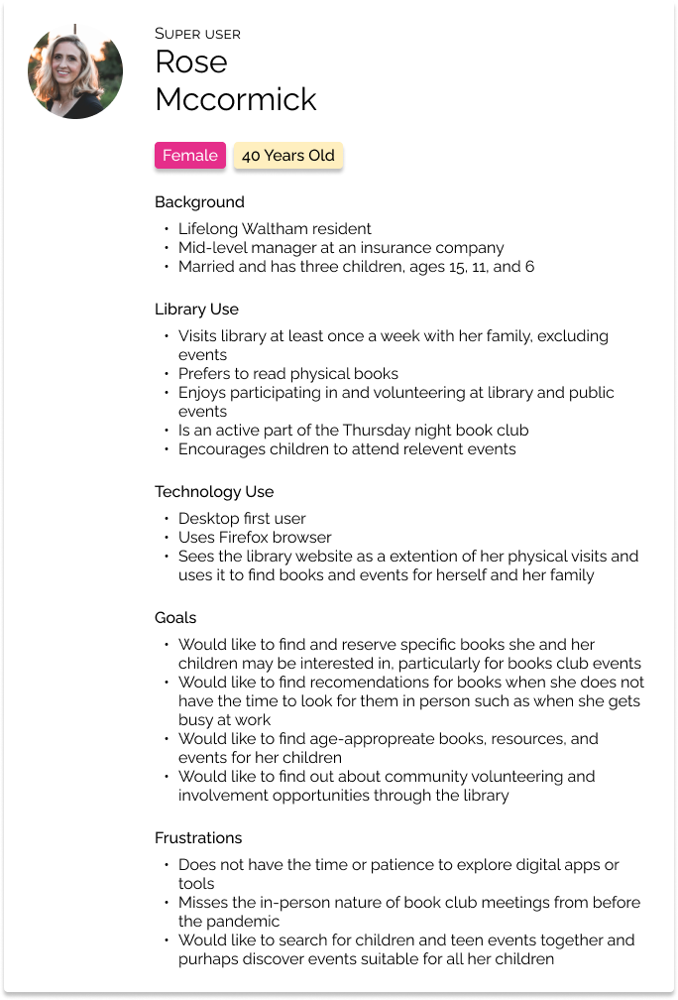
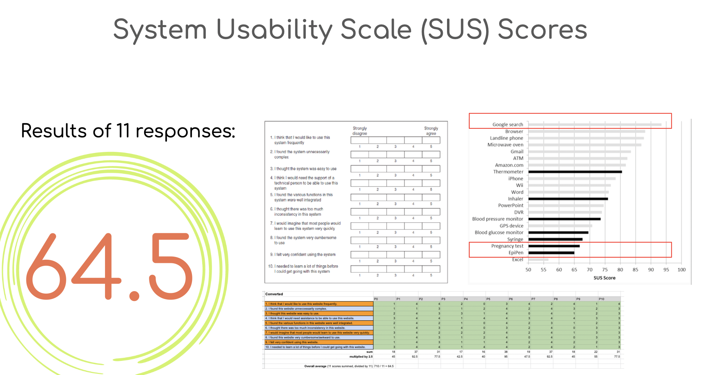
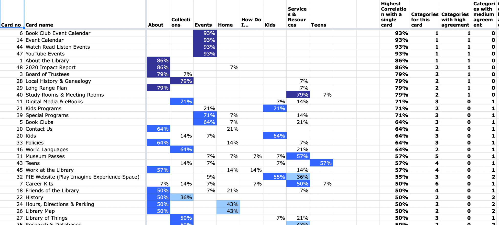
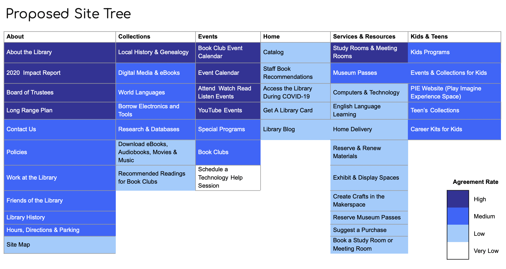
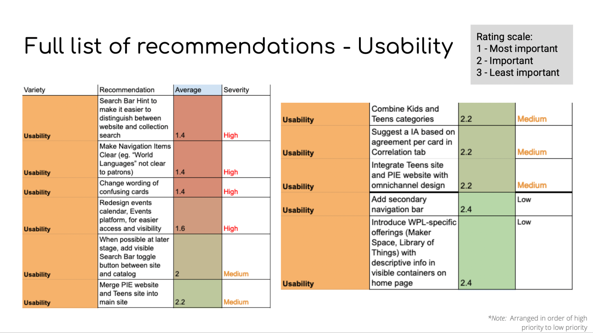
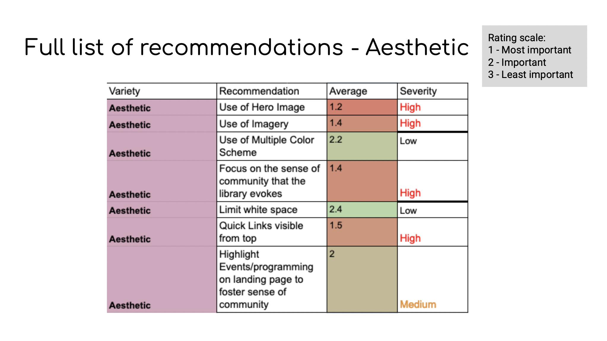
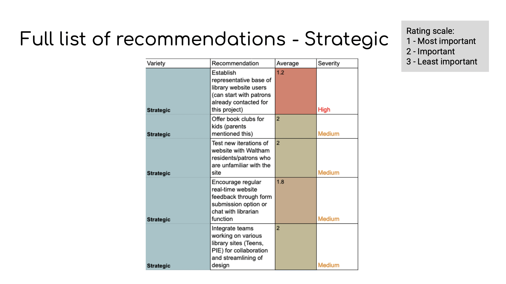

Improving Waltham's Public Library
Reading time: 6 minutes
This is a freelance pro-bono UX analysis performed by alumni and currently enrolled students at Bentley University for the Waltham Public Library, in Waltham MA. This project started in early July of 2021 and ended in the last weeks of August.
Context
When we first contacted the team at the Waltham Public Library, we had an initial video call which consisted in discussing the current website, their internal goals and pains, as well as getting a grasp on their experience with human-centered design.
After this, the team got together to write down the study design and scope of this project. In order to identify the main goals to focus on, we had the chance to look into some heat maps for the most used pages on the website, which helped us identify main use cases, and analytics information, which we used to inform our user profile, including device type, use cases, language, and more.
We communicated the logistics, study plan and goals to the sponsor via a Statement of Work document, which was approved and signed by both parties. The main research question we agreed to address was:
What difficulties do users have navigating and locating services on the library website?
In order to understand the Waltham Library website patrons better, we developed a set of three user personas.
Alongside with our personas, we created an exploratory interview study, where we gathered a group of 10 of participants fitting each of our personas, and asked them about their use patterns inside the library website, as well as their unmet feature needs and some use case scenarios.
Gathering our notes from the exploratory interview sessions, we compiled our data into a notes grid to collaboratively analyze it. We processed the data and organized it into positive and negative comments, as well as comments specifically on the information architecture and structure of the website.
Methodology
Interviews
All interviews were conducted through June using Zoom. The 11 people who were interviewed were a mix of library patrons, personal contacts, as well as other volunteers collected through a survey.
Participants and Characteristics
| Categories | Demographics | Percentage |
|---|---|---|
| Age | 65+ | 45% |
| Race and Ethnicity | White | 72% |
| Resident | Waltham local | 54% |
| Language Preference | English | 100% |
| Main Transportation | Car | 72% |
| Persona | Parent | 50% |
Table 1. Demographics of our interview and data sort study
Interview Process
- The interviews were conducted over Zoom for approximately an hour with a single interviewer and interviewee and occasionally observers from the team.
- Interviewees were asked some questions pertaining to their lives, use of technology, and use of the library such as “If you were to visit your local library’s website, what device would you be more likely to use? A desktop, a tablet, or a smartphone?” and “Do you have any children or teens who are involved in the youth groups that the Waltham Library hosts or that your local library hosts?”
- In terviewees were asked to visit the library page and were asked questions such as “Can you describe to me what you see on the front page?” and “Let’s say that you are interested to know more about a hobby of yours. How would you look for something about that on this website?”
- At the end, Interviewees were asked to fill out a SUS questionnaire about their experience using the site.
Interview data analysis
In order to process the interviews, we used a spreadsheet where we transcribed participant’s answers and color-coded positive findings and usability issues. After coding, these items were discussed in a group, where we determined which were the most common topics, both in positive aspects as well as areas of improvement.
Card sort
In order to complement interview findings with more reliable quantitative data, we did a series of 13 remote. semi-moderated, card sort exercises. In these sessions, we showed participants a Mural board with all current sections in the website and instructed participants to arrange them as needed.
Resulting data was processed in order to find levels of agreements between categories and pages. These agreement scores were the main basis of our proposed Information Architecture restructuring.
Defining the site tree
Aggregating both qualitative and quantitative methods we built a site tree.
Recommendations
Finally, based on the findings from both the SUS survey, exploratory interviews, and card sorts, the team structured a list of recommendations for the Waltham Library website. These recommendations were grouped in three different categories; Usability, Aesthetics, and Strategic.
Usability recommendations included mainly implementing our proposed Information Architecture, fixing some layout issues, and addressing some usability issues which were found by interviewees.
Aesthetics recommendations were based on our observations from what other big library websites were doing, some comments gathered during interviews, and finding a compelling color palette from a mood board.
Strategic recommendations included some first steps the WPL team can adopt to start growing a user-oriented feedback loop, such as gathering a user pool to conduct future studies and integrating different departments inside the UX-loop.
Challenges and Learnings
The totality of this study was conducted remotely, with a remotely located team and remote sessions. Team members and participants were also distributed between time zones and each had their own weekly personal commitments. Thankfully, the team was able to commit weekly for a checkpoint meeting, and we all had a robust workload, where everyone contributed and had explicit deadlines. Recruiting participants was also an issue, and the team at the Waltham Library had a great idea of placing recruitment cards inside some books for patrons to find. Also, some team members were also able to recruit different people from surveys, which were distributed through UX-centered communities.
Another big task was to do the Card Sort exercise and analysis successfully, as the team had little practical experience doing them. However, we were able to learn from a fellow team member with more experience on the topic, and had a guide about how to analyze and process the data.
The aforementioned challenges made the project go over its original scheduled time by around 3 weeks, finishing with our presentation to the WPL team in late August instead of the end of July as previously foreseen.
Outcome
Our team had great opportunities to develop new techniques and acquire new knowledge, as well as improving our teamwork and other soft skills. We are very grateful to the Waltham Public Library for letting us endeavor this project together, and specially to our internal stakeholder Todd S., who very kindly wrote us a short recommendation letter, placed below.
I, along with the library, are very fortunate that Yo reached out to us. He chose a great team that provided the library with an extraordinary amount of feedback along with a detailed prioritized list of what we need to do to improve the usability of our website. This list is comprised of changes that range from simple to others that will take some time to implement. They all did a fantastic job of working together, professionally presenting their findings to us, and explaining the importance of these changes based on their findings. – Todd S.